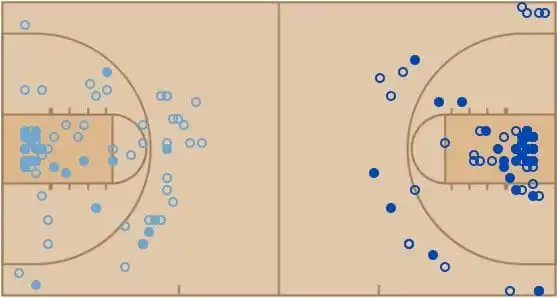
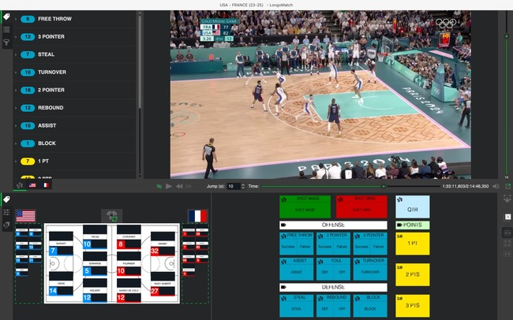
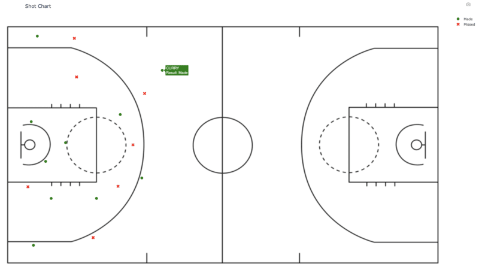
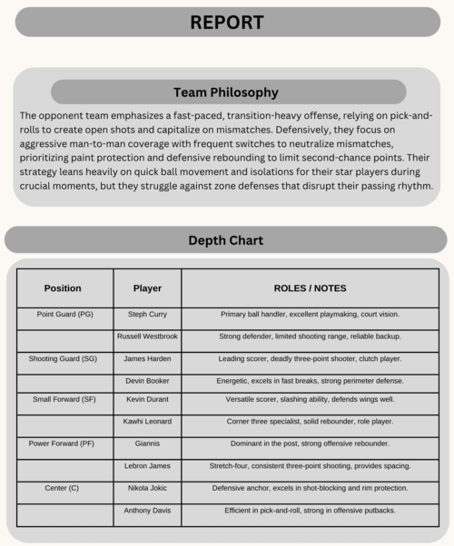

Our Services
Statistics
Statistics help in providing data-driven insights on player performance, team trends, and overall game dynamics. At Shot Metrics, we leverage advanced basketball statistics to help teams optimize performance and enhance player development. Our data-driven insights focus on player efficiency, game strategy, and tactical adjustments, providing teams with the tools they need to succeed. From shot analysis to load management, we help you make informed decisions that drive results on the court.

Game Analysis
We provide detailed game analysis to break down every aspect of the match, from offensive and defensive strategies to player rotations. Shot Metrics provides in-depth basketball analysis, offering shot charts that visualize shooting efficiency and help identify areas for improvement. Our advanced quarter-by-quarter stats break down team and player performance, offering insights into scoring trends, defensive strategies, and individual contributions throughout the game. We also create dynamic video highlights, showcasing key moments and player performance for development and game prep. With customized reports and detailed player/team analysis, Shot Metrics empowers teams to make data-driven decisions, refining strategies and boosting performance both on and off the court.
Player Performance Breakdown
Analyze individual player performances with metrics such as shooting accuracy, efficiency, and defense contributions.
Dynamic Shot Charts
Interactive shot charts to visualize shooting patterns, shot accuracy, and player shot selection.
Pre-game and Post-game Reports
We provide comprehensive reports before and after each game to help you analyze strategies and track progress.
